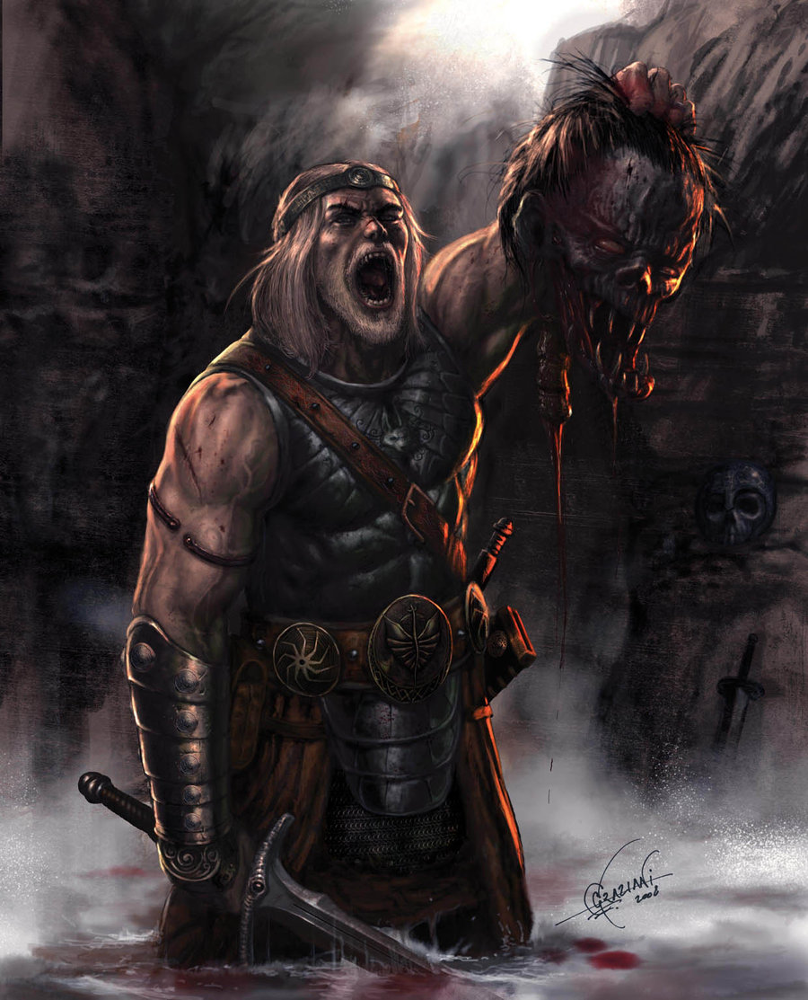
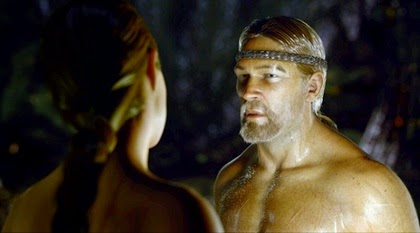

Relatos de Beowulf
Hygelac era rey de los Jutos y su sobrino era Beowulf. Ya siendo muy joven, Beowulf dio muestras de su gran valor en una batalla contra los suecos.
Pero su primera gran hazaña consistió en su lucha contra Breka (uno de los nobles de la corte de su tío). Los dos empezaron una lucha a espada. En el fragor de su batalla terminaron por sumergirse en las aguas del mar, donde siguieron luchando. Cinco días enteros estuvieron nadando y peleando, hasta que una tempestad les separó. Breka fue arrastrado a la orilla, pero Beowulf lo fue hacia unas colinas, donde resistió el embate no sólo de las olas, sino de las hostiles ondinas y otros monstruos marinos que le atacaron. Cuando ambos contendientes regresaron ante el rey y contaron su historia, Breka recibió un premio, pero a Beowulf su tío le regaló su preciada espada, Nägeling, y fue reconocido por todos por su extraordinario valor.
Pero Beowulf había sido forjado con la lealtad de los Frilad, del norte, y la ambición de los Gölat, del este, y su propio orgullo y patriotismo le arrastraba a terminar la hazaña que inició, así que tres lunas después de su audiencia con el rey, se embarcó mar adentro en una travesía hasta Amidolf, donde reclutó hombres con el valor y la astucia necesarios para enfrentarse a las tropas de Breka.
Pero la epopeya de Beowulf, El Grande, como sería recordado por las futuras generaciones, apenas iniciaba.
El barco es secuestrado por una legión de bandidos suecos, y Beowulf es capturado como espía y traidor de los Jutos, y consecuentemente llevado ante la corte, en Messar. pronto es determinada su ejecución y pronto aprisionamiento, nuestro héroe es despojado de su espada y su reconocimiento para trasladarlo a la prisión al norte de Messar, donde es tratado como un convicto del montón y sometido a las burlas y maltratos de la caballería.
Mientras limpia la caballeriza, Beowulf conoce a Mifegrin, un comerciante condenado a muerte por un malentendido amoroso con la nobleza sueca. Mifegrin desea escapar y dirigirse a Amidolf, donde lo espera su esposa y sus hijos, así que esa misma noche Beowulf y Mifegrin se juran lealtad y comienzan una rebelión desde el centro de la prisión para escapar.
